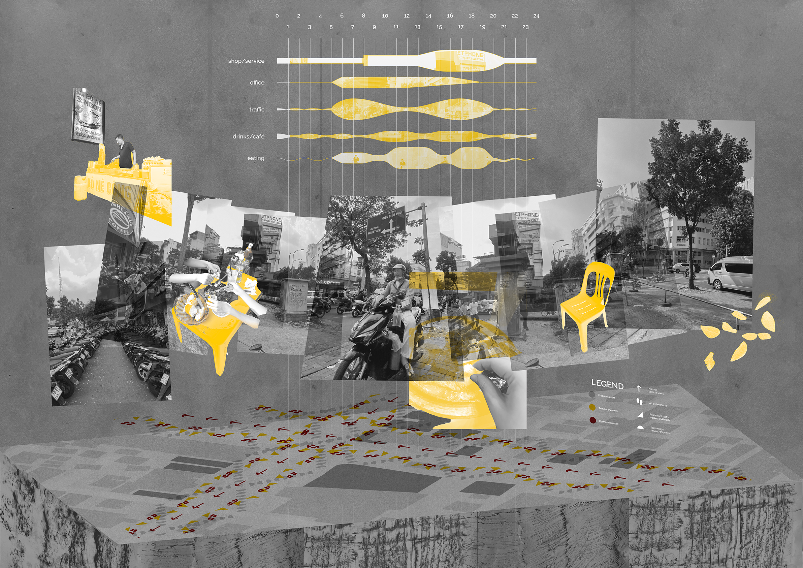
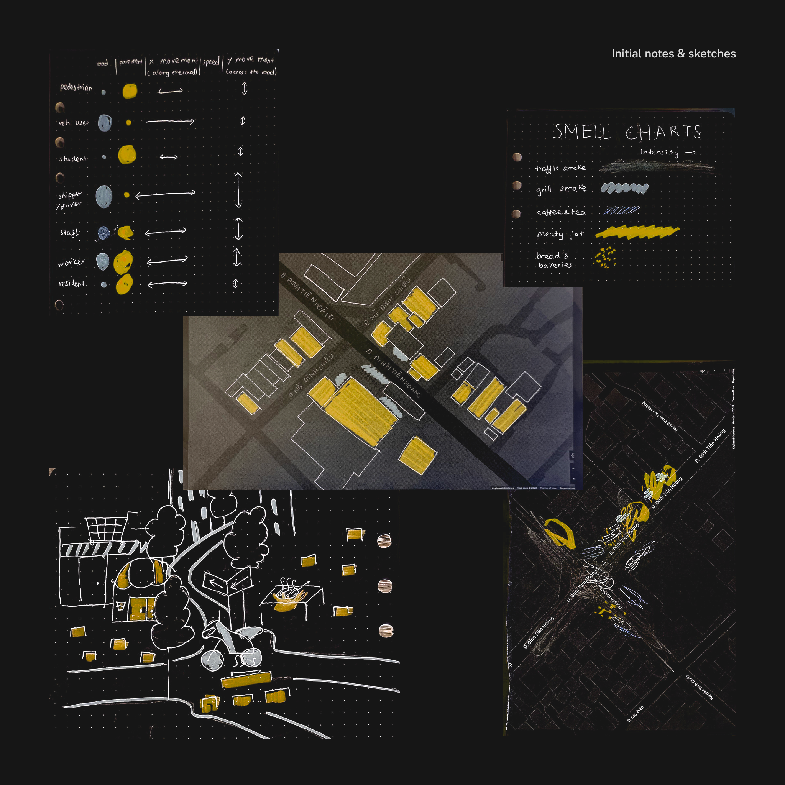
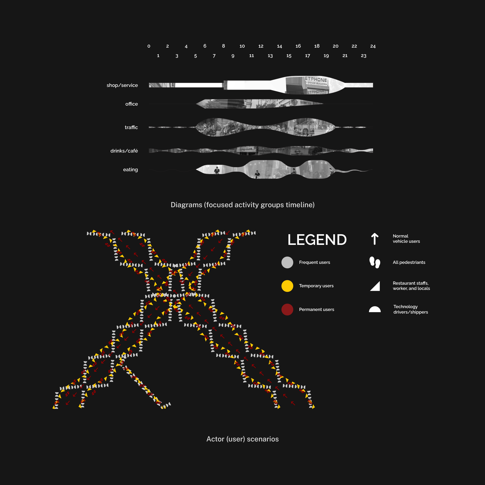
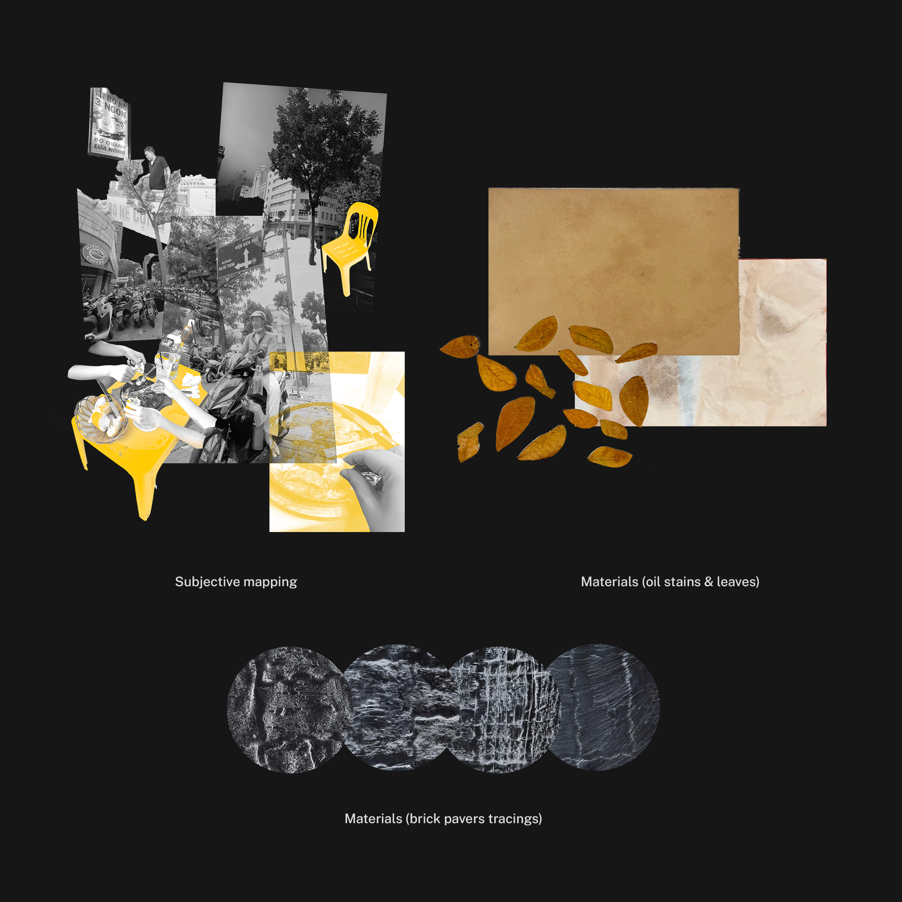

BÒ NÉ CỘNG 2023
Posters — Inventory & Graphic Description of Space
In Assignment 1, to begin to define and communicate the life of a space in the city, we are assigned to produce a 2-color visual inventory, using original photographic or drawn records of our own creation and a design observation and recording technique called AEIOU (modified).
Bò Né Cộng is a sidewalk steakhouse on 18 Đinh Tiên Hoàng Str, Đa Kao Ward, District 1, HCMC. Located in the city center with excellent food quality and a unique yellow-toned setting, the steakhouse attracts several customers and is always crowded everyday from late afternoon until evening. The place is a lovely harmony of a dining area and a vehicles-heavy road. Under the fairy-like hanging string lights, people exchange words and steaming hot food, enjoying their meals while immersing themselves in the city's busy life.

In Assignment 2, each student was assigned to produce a collage to graphically explore, describe, and communicate the complexities of the same city space - in its neighborhood surroundings. My work must combine a variety of descriptive approaches from spatial design.
   
Course: RMIT University Vietnam — History and Theory of Design 2
Duration: 3 weeks